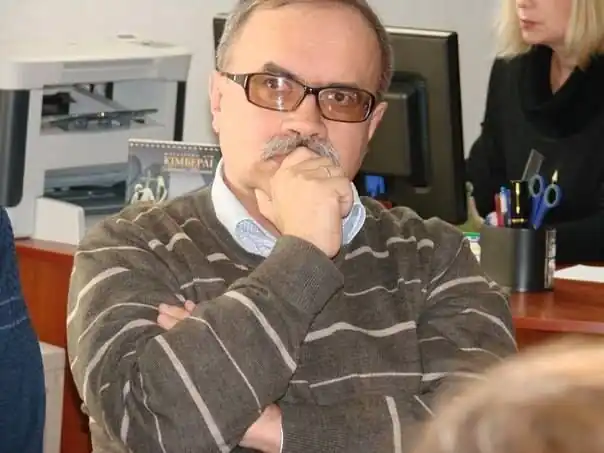

Анатолій Власюк народився на Львівщині 10 липня 1960 року. Закінчив Бориславську середню школу №1 та філологічний факультет Дрогобицького державного педагогічного інституту імені Івана Франка.
Батьки рано навчили читати, коли письменнику було чотири роки. Один зі спогадів дитинства: "Сиджу в дитячому садочку й читаю своїм одноліткам якусь казку. Це врізалося в пам'ять. Чим раніше людина вчиться читати, тим швидше в неї приходить тяга до письма."
Писав все життя. Ніколи не вважав себе професіоналом. Працював у школі, потім журналістом. Друзям подобалися його творіння. А потім колега, член Національної спілки письменників України, запропонував надрукувати роман "Інтуїція". Він вийшов 10 липня 2014 року (коли письменнику виконалося 54 роки). За півтора року видав п'ять книжок. Окрім "Інтуїції", це романи "Страшні люди" й "Втікачі", а також збірка віршів "Осіння ностальгія" та збірка оповідань і повістей "Жовтогаряче сонце в чорному квадраті". Над романом "Інтуїція" працював майже двадцять років, а потім зрозумів, що досить його вдосконалювати, бо може взагалі нічого путнього не вийти. Зараз дописує чотири романи, які розпочав у різні роки. Це "Запах танго", "Комітетник", "Технічний кандидат", а також детективний роман "Нишпорка. Поет і голуби". Про Нишпорку, сучасного детектива, є низка оповідань і повістей. Працював учителем у сільській школі. Закінчив філологічний факультет. Потім працював у глухому селі у восьмирічній школі. Викладав російську мову й літературу, українську мову й літературу, фізкультуру, трудове навчання, навіть французьку мову, хоча в школі та виші вивчав англійську. В школі катастрофічно не вистачало вчителів, бо ніхто не хотів їхати в глухі села. Отримував зарплату навіть більшу, ніж директор школи (у віці лише 21 рік). Мабуть, своїм учительським вибором зобов'язаний мамі. Вона все життя працювала у школі. Дружина — теж вчителька. Син також працював у школі. Має трьох дітей і трьох онуків. З 1992 року видає приватну газету "Тустань". Працював у львівських газетах "Ратуша", "Молода Галичина", "Експрес". Опубліковані статті в газетах "Дзеркало тижня", "День", на сайтах "Українська правда", "Обозреватель".